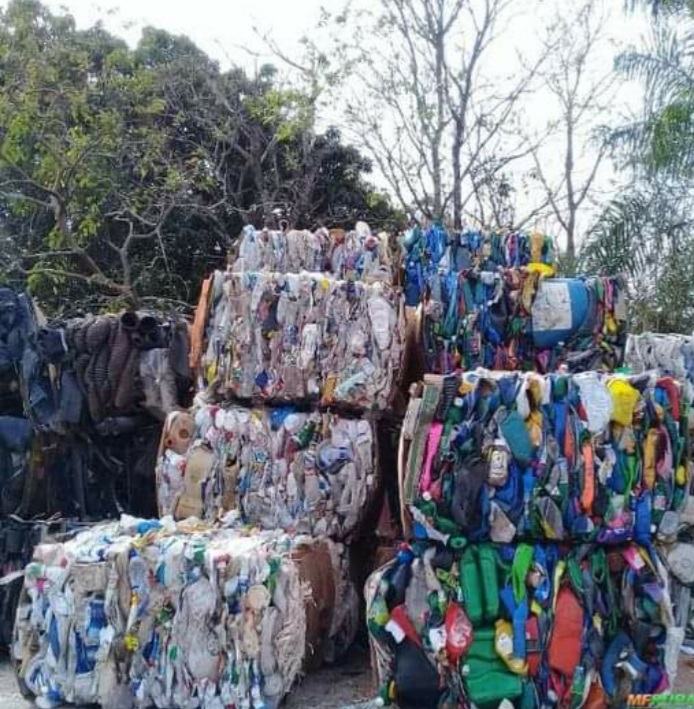

A JJ Comércio de Insumos Industriais Ltda. é uma empresa presente no mercado há mais de 10 anos buscando sempre a inovação e mantendo-se atualizada com os processos de reciclagem e com o bom reaproveitamento dos materiais pós-consumo. A JJ tem um forte compromisso com a eficiência e produtividade, desde a coleta até a entrega dos insumos aos clientes finais.
A sede da empresa situa-se na grande São Paulo perto dos principais ramais rodoviários da cidade dispondo de uma infraestrutura adequada para o manuseio e a prensagem dos diferentes materiais. A coleta é feita de forma seletiva para que os insumos tenham o melhor aproveitamento e possam ser distribuídos para as empresas industriais após o beneficiamento.